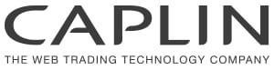

Expert Agile /  C# Tech lead
C# Tech lead

October 2013 – Present (4 years)London, United Kingdom
Help teams to become more productive with agile practices, improve the code quality using OOP SOLID principles.
Developing of real time distributed computing framework based on Storm.
Python scripting for traders.
Technologies
Java, Storm, Kafka, C#, Rx extensions, Sybase, Docker, Kotlin, Cucumber, SEDA architecture, Pandas, Zookeeper
Business domain:
Risk on Demand, Exotic OTC producst booking, Backtesting.
Senior Java Developer

April 2013 – October 2013 (7 months)London, United Kingdom
The main focus area is split between the development and maintenance of server
components and APIs for a feature rich browser based trading system. Additional
responsibilities include maintenance of the existing server side components and providing
assistance to Caplin’s support team in diagnosing customer issues.
Other responsibilities are to coach junior developers on the team, to participate in code reviews and architecture discussions and provide input into improving the engineering process and introducing new ideas and technologies.
Business areas: Finance, FX, Apama, RET
Technologies: Gradle, Thoughworks Go, Java7, Javascript, Guava, Knockout.js